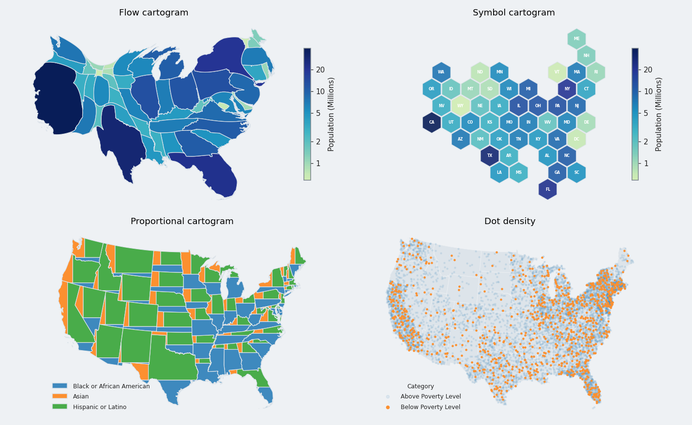
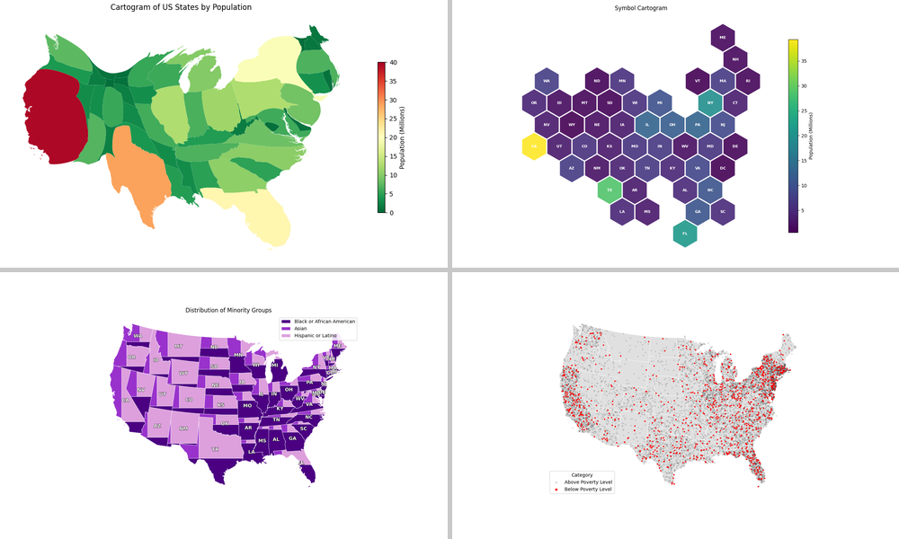

The figure of the README (cartogram-example.png) predates the style system (white background, RdYlGn_r and viridis palettes, grey separators). It is drawn again in the default plot style by scripts/make_readme_figure.py, with the same four panels of the US states.
| figure | cartogram-example.png redrawn; the README links it by its raw URL, so GitHub and PyPI show the new one after the merge |
| script | scripts/make_readme_figure.py draws it |
| not changed | the README text still says that carto-flow supports three cartogram styles, without the Voronoi and the non-contiguous cartograms |
The script runs; the figure was checked by eye.

The new figure (1430 x 880, 386 KiB): the default plot style, the same four panels.

The figure of main (1000 x 600, 225 KiB): classic style.